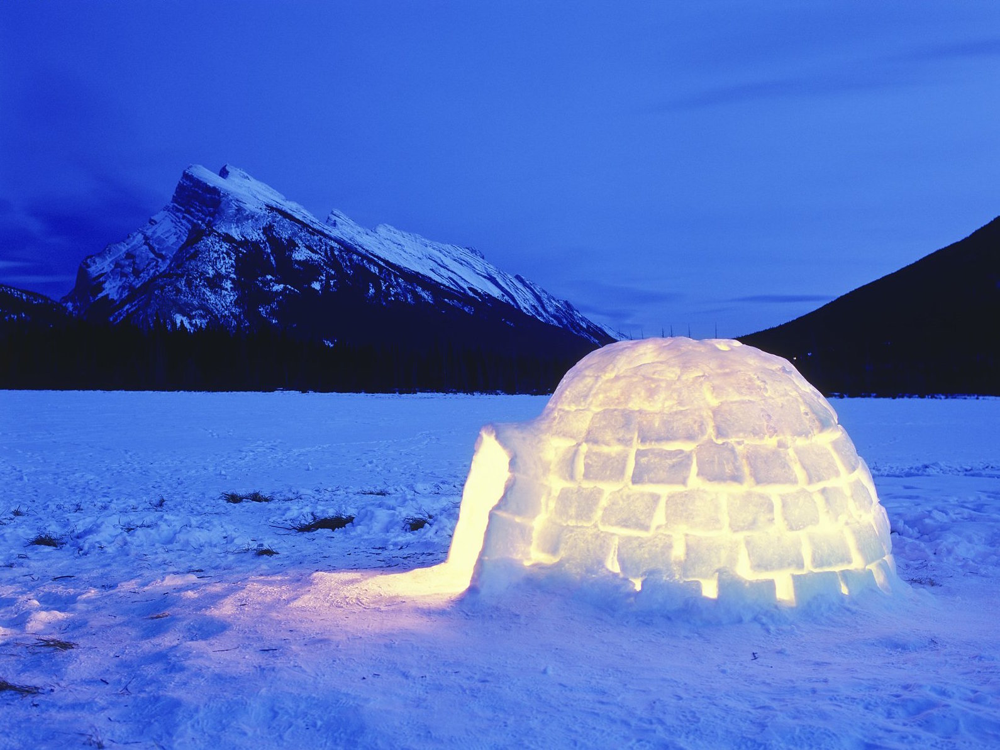

layout: false
class: center, middle, inverse

# Topic 1: Using Energy from Heat
---
name: base
layout: true
background-image: url(http://drpineda.ca/classroom/notes/slidebackground.png)

---
# Does heat affect you?
- Furnaces, air conditioners
- Stoves, microwave ovens, freezers
- Manufactured goods: cars, plastic goods
- Being able to control heat makes our lives more comfortable

But what is the cost?

---
# Heat? This does not look very warm!



---
class: inverse
background-image: url(images/igloo.jpg)
# This does not look warm?
---
# Test